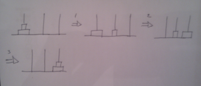
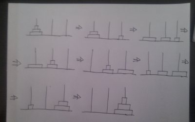

Viejas Ideas Divertidas
Índice
Vivimos en unos tiempos en que la gente busca nuevos dispositivos y software que buscan hacer grandes logros comerciales, sin embargo, todavía hay mucha gente con las ideas y la actitud con la que se inventaron logros duraderos en la ciencia de la computación.
Ideas como los lenguajes de alto nivel, la programación orientada a objetos, los editores de texto, o la inteligencia artificial salieron de hackers que se divertían con el lisp.
En un intento personal de recuperar ese espíritu de divertirse con el código lisp voy a documentar ciertas ideas de lisp.
1 Recursividad
Algunos programadores no saben lo divertido que es hacer una función recursiva, sin embargo, en lisp es algo natural y divertido. Veamos varios ejemplos
1.1 Factorial
(defun factorial (n) (if (= n 0) 1 (* n (factorial (- n 1)))))
Esto es muy sencillo solo es multiplicar una cosa con lo anterior.
1.2 Fibonacci
El algoritmo lo que dice es que si es 0 o 1 devuelve 1 y si es más devuelve la suma de los dos últimos:
(defun fibonacci (n) (interactive "nEscribe un numero: " n) (message (number-to-string (fibonacci-aux n)))) (defun fibonacci-aux (n) (if (or (= n 0) (= n 1)) 1 (+ (fibonacci-aux (- n 1)) (fibonacci-aux (- n 2)))))
1.3 Hanoi
El juego de la torres de hanoi consiste en tener 3 tubos y n discos y hay que mover los discos de un tubo a otro.
Véase el siguiente dibujo para recordar cómo se resuelve para 2 discos:

Como se puede observar, lleva 1 paso mover el de abajo y 2 mover el de arriba.
Ahora se observará qué ocurre con 3 discos:

Pues lleva 1 paso mover el de abajo, 2 mover el de enmedio y 4 en mover el de arriba.
La función devuelve el número de pasos que son necesarios en función del número de discos.
El código siguiente para implementar este coste es el siguiente:
(defun torres-de-hanoi (discos) (interactive "nDime tus discos y te digo cuantos pasos tienes que dar: " discos) (message (number-to-string (torres-de-hanoi-aux discos)))) (defun torres-de-hanoi-aux (discos) (if (= discos 1) 1 (+ 1 (* 2 (torres-de-hanoi-aux (- discos 1))))))
Para ver una animación de hanoi desde emacs podéis hacer M-x hanoi
2 Funciones que tienen funciones como argumentos
Otra cosa que a los programadores/as que me encuentro en los trabajos no siempre se les ocurre es hacer funciones que tienen funciones como argumentos.
(mapcar #'oddp '(1 2 3))
Esta tontería lo que hace es ver si cada elemento de la lista es par o impar y devuelve una lista así (T F T) y es una cosa divertida :).
Otro ejemplo de mapcar es el siguiente:
(mapcar (lambda (n) (/ n 2)) '(2 4 6))
Aquí se hace uso de la función lambda que es una función anónima.
Hay otra función que lo que hace es contar cuantos elementos pares hay, mírala:
(count-if #'evenp '(1 2 3 4))
También podemos hacer funciones recursivas que tengan con este tipo de funciones como una función de eliminar dobles en una lista:
(defun elimDobles(list) (if (eq 0 (length list)) (list) (cons (first list) (elimDobles (remove-if #'(lambda (x) (eq x (first list))) (rest list)))))) ;; (elimDobles '(3 2 3 4 5 4 5))
O con varias funciones crear un generador de números primos:
(defun divisible (x y) "devuelve si x es divisible entre y" (= 0 (% x y))) ;;(divisible 4 2) (defun genera-lista (x y) "devuelve una lista de x a y" (if (= x y) (list y) (cons x (genera-lista (+ 1 x) y)))) ;;(genera-lista 2 9) (defun divisores (y) "devuelve los divisores de x" (remove-if #'(lambda (x) (not (divisible y x))) (genera-lista 1 y))) ;;(divisores 7) (defun genera-primos (max) "devuelve una lista de primos de 1 a max" (remove-if #'(lambda (x) (not (= (length (divisores x)) 2))) (genera-lista 1 max))) ;;(genera-primos 29)
3 Macros
Las macros es una de las razones que hacen que lisp sea un lenguaje fácilmente extensible, así una buena razón para usar macros es que son eficientes, voy a demostrarlo en gnu clisp:
> (defmacro square (X) `(* ,X ,X)) SQUARE > (square 3) 9 > (time (square 3)) Real time: 106E-4 sec Run time: 0004 sec Space: 248 Bytes 9 > (time (+ 3 3)) Real time: 27E-5 sec Run time: 00 sec Space: 0 Bytes 9 > (defun square2 (x) (* x x)) SQUARE2 > (square2 3) 9 > (time (square2 3)) Real time: 36E-5 sec Run time: 00 sec Space: 0 Bytes 9
Con este pequeño ejemplo vemos que lo más eficiente es usar macros
Hoy día hay muchos lenguajes implementan algunas de estas características divertidas aunque muchos de sus programadores en no las usan porque es un entorno laboral en el que no hay lugar para la diversión, pero les cuesta a llegar a las nuevas ideas divertidas que siguen implementando los nuevos programadores de lisp. Un pasito que podrían dar los programadores nuevos un editor duradero como GNU Emacs y así aprenderían trucos divertidos.
Puedes descargar algunas implementaciones de estos ejemplos aquí:
4 Licencia
Este documento está bajo una Licencia Creative Commons Reconocimiento Unported 3.0